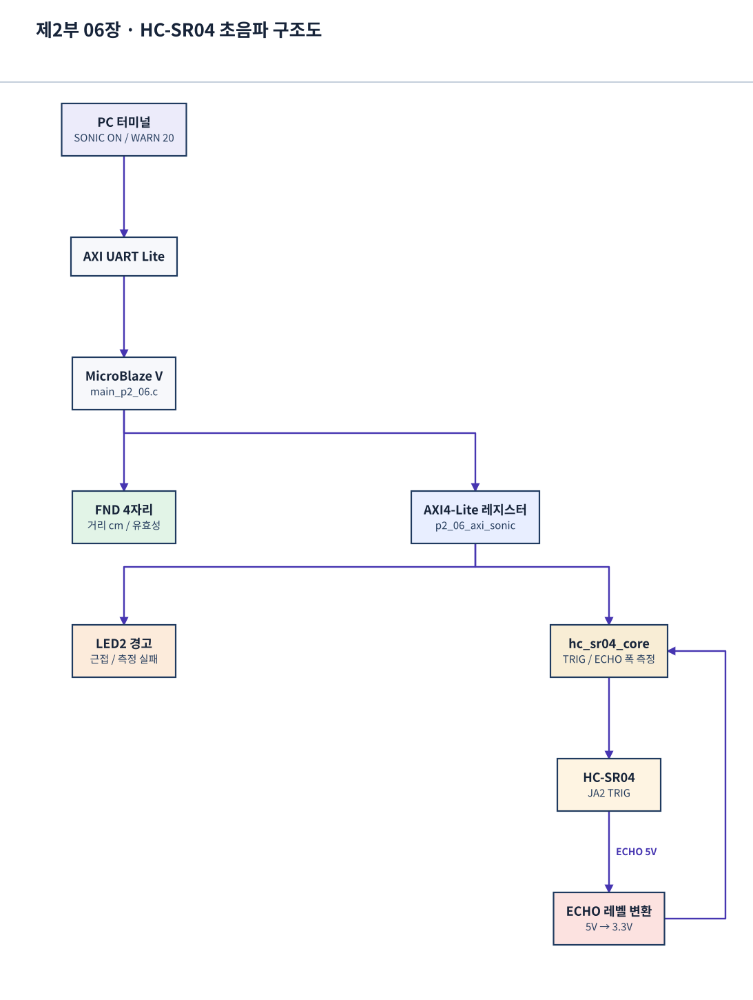

00이 장의 목표
HC-SR04 상태머신·AXI 슬레이브·IP Wrapper·보드 사용자 Top의 실제 코드와 설명.
- Basys3 XC7A35T
- MicroBlaze V
- Vivado/Vitis 2024.2
- SONIC / WARN
- RTL + AXI
01Core · AXI IP · 사용자 Top 책임 분리
| 모듈 | 책임 | 확인할 조건 |
|---|---|---|
hc_sr04_core | TRIG/ ECHO 동기화·타이머·거리 환산 | 12us TRIG, 38ms Timeout, 60ms Cooldown, 2~400cm |
p2_06_axi_sonic_v1_0_S00_AXI | 설정 레지스터·값 읽기·AXI 프로토콜 | AW/W 독립, WSTRB, B/R backpressure, RO 보호 |
p2_06_axi_sonic_v1_0 | 사용자 IP Packager 외부 인터페이스 | Ports and Interfaces, S00_AXI |
basys3_soc11_top | FPGA 보드 핀·Wire/Controller/Wrapper 연결 | LED0~15 단일 출력 소유권, 핀 이름 일치 |
Core는 TRIG를 약 12us HIGH로 유지한 뒤 ECHO의 상승 에지부터 하강 에지까지 카운트한다. ECHO가 지나치게 길거나 짧으면 VALID=0을 설정한다. 완료 시 done_pulse_o는 한 클록만 HIGH이며, AXI의 seq_count가 새 결과를 표시한다.
sonic_unsafe_o는 WARN_EN과 무관하다. sonic_alert_o만 WARN_EN을 반영하므로 나중에 안전 정지 기능을 설계할 때 경고 LED의 OFF 설정을 안전 해제로 오해하지 않는다.

02AXI4-Lite 독립 채널과 레지스터 사용
AXI4-Lite는 AW(쓰기 주소), W(쓰기 데이터), B(쓰기 응답), AR(읽기 주소), R(읽기 응답) 등 5개의 채널로 구성된다. AW와 W는 반드시 같은 주기에 도착하지 않으며, 본 슬레이브는 각각 버퍼에 보관한 뒤 한 번의 레지스터 쓰기로 결합한다.
| 버스 신호 | 동작 의미 |
|---|---|
| AWVALID/AWREADY | 쓰기 주소 전달의 handshake(핸드셰이크, 양측 동의) |
| WVALID/WREADY/WSTRB | 쓰기 데이터와 바이트별 유효 표시 전달 |
| BVALID/BREADY | CPU가 응답을 수락할 때까지 응답 유지 |
| ARVALID/ARREADY | 읽기 주소 수락 |
| RVALID/RREADY | 읽기 데이터·오류 응답 수락 시까지 유지 |
주소 정렬: 32비트 레지스터는 0x00, 0x04, 0x08 ...처럼 4바이트 단위로 지정한다. 0x03 등 비정렬 주소와 읽기 전용 레지스터 쓰기는 SLVERR로 응답해야 한다.
03rtl/hc_sr04_core.v
전체 코드: 해당 Verilog 소스 열기. 실제 Vivado 2024.2 Packager 생성 파일의 포트·파라미터와 대조 후 적용한다.
`timescale 1ns/1ps
// P2-06 HC-SR04 reusable timing core; no board pins or AXI dependency.
// (추가) 2FF Echo synchronizer, microsecond tick, bounded waits, cooldown.
// 100 MHz AXI clock -> 100 clocks / 1 us; 12 us TRIG, >=60 ms cooldown.
// Result is the last COMPLETED reading. valid_o and fault flags persist.
module hc_sr04_core #(
parameter integer CLK_HZ = 100000000,
parameter integer TRIG_US = 12,
parameter integer TIMEOUT_US = 38000,
parameter integer COOLDOWN_US = 60000
)(
input wire clk, input wire resetn,
input wire echo_i, input wire start_i,
output reg trig_o, output wire ready_o, output wire busy_o,
output reg done_pulse_o,
output reg [15:0] distance_cm_o,
output reg [31:0] echo_us_o,
output reg valid_o, output reg timeout_o, output reg out_range_o
);
localparam integer TICK_CYCLES = CLK_HZ / 1000000;
localparam [2:0] S_IDLE=3'd0, S_TRIG=3'd1,
S_WAIT=3'd2, S_ECHO=3'd3, S_COOL=3'd4;
reg [2:0] state;
reg [31:0] div_count, us_count, high_us;
reg echo_meta, echo_sync, echo_prev;
wire tick_us = (div_count == TICK_CYCLES-1);
wire echo_rise = echo_sync && !echo_prev;
reg echo_rise_pending; // Catch sub-us rising edges until the next us tick.
assign ready_o = (state == S_IDLE);
assign busy_o = !ready_o;
// (추가) FPGA input can be asynchronous. Metastability cannot be
// eliminated absolutely; this 2FF path lowers the risk.
always @(posedge clk) begin
if (!resetn) begin
echo_meta <= 1'b0;
echo_sync <= 1'b0;
echo_prev <= 1'b0;
end else begin
echo_meta <= echo_i;
echo_sync <= echo_meta;
echo_prev <= echo_sync;
end
end
always @(posedge clk) begin
if (!resetn || state != S_WAIT) echo_rise_pending <= 1'b0;
else if (echo_rise) echo_rise_pending <= 1'b1;
else if (tick_us) echo_rise_pending <= 1'b0;
end
always @(posedge clk) begin
if (!resetn) begin
div_count <= 32'd0;
state <= S_IDLE;
us_count <= 32'd0;
high_us <= 32'd0;
trig_o <= 1'b0;
done_pulse_o <= 1'b0;
distance_cm_o <= 16'd0;
echo_us_o <= 32'd0;
valid_o <= 1'b0;
timeout_o <= 1'b0;
out_range_o <= 1'b0;
end else begin
done_pulse_o <= 1'b0;
if (tick_us) div_count <= 32'd0;
else div_count <= div_count + 32'd1;
case (state)
S_IDLE: begin
if (start_i) begin
trig_o <= 1'b1;
us_count <= 32'd0;
high_us <= 32'd0;
state <= S_TRIG;
end
end
S_TRIG: if (tick_us) begin
if (us_count + 32'd1 >= TRIG_US) begin
trig_o <= 1'b0;
us_count <= 32'd0;
state <= S_WAIT;
end else us_count <= us_count + 32'd1;
end
S_WAIT: if (tick_us) begin
if (echo_rise_pending || echo_rise) begin
// Edge latched at 100MHz to avoid missing it on us tick.
high_us <= 32'd1;
us_count <= 32'd0;
state <= S_ECHO;
end else if (us_count + 32'd1 >= TIMEOUT_US) begin
valid_o <= 1'b0;
timeout_o <= 1'b1;
out_range_o <= 1'b0;
distance_cm_o <= 16'd0;
echo_us_o <= 32'd0;
done_pulse_o <= 1'b1;
us_count <= 32'd0;
state <= S_COOL;
end else us_count <= us_count + 32'd1;
end
S_ECHO: if (tick_us) begin
if (!echo_sync) begin
echo_us_o <= high_us;
// D(cm) ~= EchoHigh(us)/58 at nominal room temperature.
if (high_us >= 32'd116 && high_us <= 32'd23200) begin
distance_cm_o <= (high_us + 32'd29) / 32'd58;
valid_o <= 1'b1;
timeout_o <= 1'b0;
out_range_o <= 1'b0;
end else begin
distance_cm_o <= 16'd0;
valid_o <= 1'b0;
timeout_o <= 1'b0;
out_range_o <= 1'b1;
end
done_pulse_o <= 1'b1;
us_count <= 32'd0;
state <= S_COOL;
end else if (high_us >= TIMEOUT_US) begin
echo_us_o <= high_us;
distance_cm_o <= 16'd0;
valid_o <= 1'b0;
timeout_o <= 1'b1;
out_range_o <= 1'b0;
done_pulse_o <= 1'b1;
us_count <= 32'd0;
state <= S_COOL;
end else high_us <= high_us + 32'd1;
end
S_COOL: if (tick_us) begin
if (us_count + 32'd1 >= COOLDOWN_US) begin
us_count <= 32'd0;
state <= S_IDLE;
end else us_count <= us_count + 32'd1;
end
default: state <= S_IDLE;
endcase
end
end
endmodule04rtl/p2_06_axi_sonic_v1_0_S00_AXI.v
전체 코드: 해당 Verilog 소스 열기. 실제 Vivado 2024.2 Packager 생성 파일의 포트·파라미터와 대조 후 적용한다.
`timescale 1ns/1ps
// P2-06 AXI4-Lite HC-SR04 user IP, 32-bit aligned addresses only.
// REG0 0x00 CONTROL: bit0 AUTO, bit1 START W1P, bit2 WARN_EN (reset 1)
// REG1 0x04 STATUS: bit0 BUSY,1 VALID,2 TIMEOUT,3 RANGE_ERROR,
// bit4 WARN_LED,5 UNSAFE,6 AUTO,7 WARN_EN,8 READY
// REG2 0x08 DIST_CM; REG3 0x0C ECHO_US; REG4 0x10 WARN_CM (1..400)
// REG5 0x14 SEQUENCE; REG6 0x18 ID 0x00060001; REG7 0x1C CLK_HZ
// AW/W sampled independently; B/R held while backpressured; byte strobe.
module p2_06_axi_sonic_v1_0_S00_AXI #(
parameter integer C_S_AXI_DATA_WIDTH = 32,
parameter integer C_S_AXI_ADDR_WIDTH = 6,
parameter integer CLK_HZ = 100000000,
parameter integer TIMEOUT_US = 38000,
parameter integer COOLDOWN_US = 60000
)(
input wire S_AXI_ACLK, input wire S_AXI_ARESETN,
input wire [C_S_AXI_ADDR_WIDTH-1:0] S_AXI_AWADDR,
input wire [2:0] S_AXI_AWPROT, input wire S_AXI_AWVALID,
output wire S_AXI_AWREADY,
input wire [C_S_AXI_DATA_WIDTH-1:0] S_AXI_WDATA,
input wire [(C_S_AXI_DATA_WIDTH/8)-1:0] S_AXI_WSTRB,
input wire S_AXI_WVALID, output wire S_AXI_WREADY,
output reg [1:0] S_AXI_BRESP, output reg S_AXI_BVALID,
input wire S_AXI_BREADY,
input wire [C_S_AXI_ADDR_WIDTH-1:0] S_AXI_ARADDR,
input wire [2:0] S_AXI_ARPROT, input wire S_AXI_ARVALID,
output wire S_AXI_ARREADY,
output reg [C_S_AXI_DATA_WIDTH-1:0] S_AXI_RDATA,
output reg [1:0] S_AXI_RRESP, output reg S_AXI_RVALID,
input wire S_AXI_RREADY,
input wire sonic_echo_i, output wire sonic_trig_o,
output wire sonic_alert_o, output wire sonic_unsafe_o
);
localparam [1:0] RESP_OKAY=2'b00, RESP_SLVERR=2'b10;
reg auto_en, warn_en, kick;
reg [15:0] warn_cm;
wire core_ready, core_busy, core_done;
wire [15:0] core_dist;
wire [31:0] core_echo_us;
wire core_valid, core_timeout, core_range_error;
reg [31:0] seq_count;
wire core_start = (auto_en || kick) && core_ready;
assign sonic_unsafe_o = (!core_valid) || (core_dist <= warn_cm);
assign sonic_alert_o = warn_en && sonic_unsafe_o;
hc_sr04_core #(.CLK_HZ(CLK_HZ), .TIMEOUT_US(TIMEOUT_US),
.COOLDOWN_US(COOLDOWN_US)) u_sonic_core (
.clk(S_AXI_ACLK), .resetn(S_AXI_ARESETN),
.echo_i(sonic_echo_i), .start_i(core_start),
.trig_o(sonic_trig_o), .ready_o(core_ready), .busy_o(core_busy),
.done_pulse_o(core_done), .distance_cm_o(core_dist),
.echo_us_o(core_echo_us), .valid_o(core_valid),
.timeout_o(core_timeout), .out_range_o(core_range_error)
);
reg aw_hold, w_hold;
reg [C_S_AXI_ADDR_WIDTH-1:0] awaddr_hold;
reg [31:0] wdata_hold;
reg [3:0] wstrb_hold;
reg [31:0] merged_data;
integer j;
wire [31:0] status_word = {23'd0, core_ready, warn_en, auto_en,
sonic_unsafe_o, sonic_alert_o,
core_range_error, core_timeout,
core_valid, core_busy};
assign S_AXI_AWREADY = S_AXI_ARESETN && !aw_hold && !S_AXI_BVALID;
assign S_AXI_WREADY = S_AXI_ARESETN && !w_hold && !S_AXI_BVALID;
assign S_AXI_ARREADY = S_AXI_ARESETN && !S_AXI_RVALID;
always @(posedge S_AXI_ACLK) begin
if (!S_AXI_ARESETN) begin
auto_en <= 1'b0;
warn_en <= 1'b1; // Default fail-safe near/fault indicator ON.
warn_cm <= 16'd20;
kick <= 1'b0;
seq_count <= 32'd0;
aw_hold <= 1'b0; w_hold <= 1'b0;
awaddr_hold <= {C_S_AXI_ADDR_WIDTH{1'b0}};
wdata_hold <= 32'd0; wstrb_hold <= 4'd0;
S_AXI_BRESP <= RESP_OKAY;
S_AXI_BVALID <= 1'b0;
end else begin
kick <= 1'b0; // One-clock W1P pulse.
if (core_done) seq_count <= seq_count + 32'd1;
if (S_AXI_AWVALID && S_AXI_AWREADY) begin
aw_hold <= 1'b1;
awaddr_hold <= S_AXI_AWADDR;
end
if (S_AXI_WVALID && S_AXI_WREADY) begin
w_hold <= 1'b1;
wdata_hold <= S_AXI_WDATA;
wstrb_hold <= S_AXI_WSTRB;
end
if (S_AXI_BVALID && S_AXI_BREADY) S_AXI_BVALID <= 1'b0;
if (aw_hold && w_hold && !S_AXI_BVALID) begin
aw_hold <= 1'b0; w_hold <= 1'b0;
S_AXI_BVALID <= 1'b1;
S_AXI_BRESP <= RESP_OKAY;
case (awaddr_hold)
6'h00: begin
merged_data = {29'd0,warn_en,1'b0,auto_en};
for (j=0;j<4;j=j+1)
if (wstrb_hold[j])
merged_data[j*8 +: 8] = wdata_hold[j*8 +: 8];
if ((merged_data & ~32'h7) != 0) begin
S_AXI_BRESP <= RESP_SLVERR;
end else if (merged_data[1] && !core_ready) begin
S_AXI_BRESP <= RESP_SLVERR; // Busy one-shot rejected.
end else begin
auto_en <= merged_data[0];
warn_en <= merged_data[2];
kick <= merged_data[1];
end
end
6'h10: begin
merged_data = {16'd0,warn_cm};
for (j=0;j<4;j=j+1)
if (wstrb_hold[j])
merged_data[j*8 +: 8] = wdata_hold[j*8 +: 8];
if (merged_data >= 32'd1 && merged_data <= 32'd400)
warn_cm <= merged_data[15:0];
else S_AXI_BRESP <= RESP_SLVERR;
end
default: S_AXI_BRESP <= RESP_SLVERR;
endcase
end
end
end
always @(posedge S_AXI_ACLK) begin
if (!S_AXI_ARESETN) begin
S_AXI_RVALID <= 1'b0;
S_AXI_RDATA <= 32'd0;
S_AXI_RRESP <= RESP_OKAY;
end else begin
if (S_AXI_RVALID && S_AXI_RREADY) S_AXI_RVALID <= 1'b0;
if (S_AXI_ARVALID && S_AXI_ARREADY) begin
S_AXI_RVALID <= 1'b1;
S_AXI_RRESP <= RESP_OKAY;
case (S_AXI_ARADDR)
6'h00: S_AXI_RDATA <= {29'd0,warn_en,1'b0,auto_en};
6'h04: S_AXI_RDATA <= status_word;
6'h08: S_AXI_RDATA <= {16'd0,core_dist};
6'h0C: S_AXI_RDATA <= core_echo_us;
6'h10: S_AXI_RDATA <= {16'd0,warn_cm};
6'h14: S_AXI_RDATA <= seq_count;
6'h18: S_AXI_RDATA <= 32'h00060001;
6'h1C: S_AXI_RDATA <= CLK_HZ;
default: begin
S_AXI_RDATA <= 32'd0;
S_AXI_RRESP <= RESP_SLVERR;
end
endcase
end
end
end
endmodule05rtl/p2_06_axi_sonic_v1_0.v
전체 코드: 해당 Verilog 소스 열기. 실제 Vivado 2024.2 Packager 생성 파일의 포트·파라미터와 대조 후 적용한다.
`timescale 1ns/1ps
// P2-06 Vivado IP Packager external shell; 32-bit AXI4-Lite only.
module p2_06_axi_sonic_v1_0 #(
parameter integer C_S00_AXI_DATA_WIDTH=32,
parameter integer C_S00_AXI_ADDR_WIDTH=6,
parameter integer CLK_HZ=100000000,
parameter integer TIMEOUT_US=38000,
parameter integer COOLDOWN_US=60000
)(
input wire sonic_echo_i, output wire sonic_trig_o,
output wire sonic_alert_o, output wire sonic_unsafe_o,
input wire s00_axi_aclk, input wire s00_axi_aresetn,
input wire [C_S00_AXI_ADDR_WIDTH-1:0] s00_axi_awaddr,
input wire [2:0] s00_axi_awprot, input wire s00_axi_awvalid,
output wire s00_axi_awready,
input wire [C_S00_AXI_DATA_WIDTH-1:0] s00_axi_wdata,
input wire [(C_S00_AXI_DATA_WIDTH/8)-1:0] s00_axi_wstrb,
input wire s00_axi_wvalid, output wire s00_axi_wready,
output wire [1:0] s00_axi_bresp, output wire s00_axi_bvalid,
input wire s00_axi_bready,
input wire [C_S00_AXI_ADDR_WIDTH-1:0] s00_axi_araddr,
input wire [2:0] s00_axi_arprot, input wire s00_axi_arvalid,
output wire s00_axi_arready,
output wire [C_S00_AXI_DATA_WIDTH-1:0] s00_axi_rdata,
output wire [1:0] s00_axi_rresp, output wire s00_axi_rvalid,
input wire s00_axi_rready
);
p2_06_axi_sonic_v1_0_S00_AXI #(
.C_S_AXI_DATA_WIDTH(C_S00_AXI_DATA_WIDTH),
.C_S_AXI_ADDR_WIDTH(C_S00_AXI_ADDR_WIDTH),
.CLK_HZ(CLK_HZ),.TIMEOUT_US(TIMEOUT_US),
.COOLDOWN_US(COOLDOWN_US)
) u_axi (
.S_AXI_ACLK(s00_axi_aclk),.S_AXI_ARESETN(s00_axi_aresetn),
.S_AXI_AWADDR(s00_axi_awaddr),.S_AXI_AWPROT(s00_axi_awprot),
.S_AXI_AWVALID(s00_axi_awvalid),.S_AXI_AWREADY(s00_axi_awready),
.S_AXI_WDATA(s00_axi_wdata),.S_AXI_WSTRB(s00_axi_wstrb),
.S_AXI_WVALID(s00_axi_wvalid),.S_AXI_WREADY(s00_axi_wready),
.S_AXI_BRESP(s00_axi_bresp),.S_AXI_BVALID(s00_axi_bvalid),
.S_AXI_BREADY(s00_axi_bready),
.S_AXI_ARADDR(s00_axi_araddr),.S_AXI_ARPROT(s00_axi_arprot),
.S_AXI_ARVALID(s00_axi_arvalid),.S_AXI_ARREADY(s00_axi_arready),
.S_AXI_RDATA(s00_axi_rdata),.S_AXI_RRESP(s00_axi_rresp),
.S_AXI_RVALID(s00_axi_rvalid),.S_AXI_RREADY(s00_axi_rready),
.sonic_echo_i(sonic_echo_i),.sonic_trig_o(sonic_trig_o),
.sonic_alert_o(sonic_alert_o),.sonic_unsafe_o(sonic_unsafe_o)
);
endmodule06rtl/basys3_soc11_top_p2_06.v
전체 코드: 해당 Verilog 소스 열기. 실제 Vivado 2024.2 Packager 생성 파일의 포트·파라미터와 대조 후 적용한다.
// P2-06 USER TOP: Shell/Wrapper ONLY. No always/FSM/policy expressions.
// (유지) LED0 P2-01; LED1 P2-05 AUTO/PWM controller;
// (변경) LED2 P2-06 sonic_alert, LED3~15 old GPIO.
// WARNING: compare actual generated BD Wrapper port names before applying!
module basys3_soc11_top (
input wire clk, input wire btnC,
input wire btnU, input wire btnD, input wire btnL, input wire btnR,
input wire cds_digital, // JA1, J1 (P2-05)
output wire sonic_trig, // JA2, L2; see level-shifting note
input wire sonic_echo, // JA3, J2; external 5V->3.3V conversion required
input wire [15:0] sw, output wire [15:0] led,
input wire RsRx, output wire RsTx,
output wire [6:0] seg, output wire [3:0] an, output wire dp
);
wire [15:0] gpio_led;
wire p2_led0;
wire pwm_led1;
wire auto_enable, cds_dark, cds_valid;
wire light_led1;
wire sonic_alert, sonic_unsafe;
auto_light_controller u_light_controller (
.pwm_led_i(pwm_led1),.auto_enable_i(auto_enable),
.sensor_dark_i(cds_dark),.sensor_valid_i(cds_valid),
.led1_o(light_led1)
);
// (변경) Pure board-bit wiring; LED2 has exactly one source.
assign led = {gpio_led[15:3], sonic_alert, light_led1, p2_led0};
soc11_integration_wrapper u_soc11 (
.clk(clk),.btnC(btnC),
.btnU(btnU),.btnD(btnD),.btnL(btnL),.btnR(btnR),
.sw_tri_i(sw),.led_tri_o(gpio_led),
.UART_0_rxd(RsRx),.UART_0_txd(RsTx),
.p2_led_o(p2_led0),.pwm_led1(pwm_led1),
.fnd_seg(seg),.fnd_an(an),.fnd_dp(dp),
.cds_digital(cds_digital),
.cds_dark(cds_dark),.cds_valid(cds_valid),
.cds_auto_enable(auto_enable),
.sonic_trig(sonic_trig),.sonic_echo(sonic_echo),
.sonic_alert(sonic_alert),.sonic_unsafe(sonic_unsafe)
);
endmodule